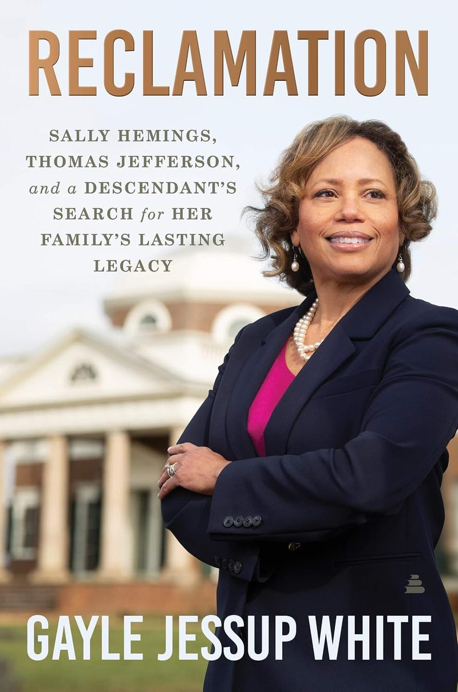

Author · Speaker · Journalist
A storyteller at the crossroads of American history, family, and memory.
Author of Reclamation, the story of how one family’s oral history led to Monticello and to proof of kinship with Thomas Jefferson and the people he enslaved.
“A real life version of Roots.”
“A quintessential American story that should be required reading.”
“A graphic and sweeping look at how the politics of race and class play out.”
Books

Amistad / HarperCollins
Reclamation
Sally Hemings, Thomas Jefferson, and a Descendant’s Search for Her Family’s Lasting Legacy
It began with a story told by an elderly aunt. Over four decades of genealogical research and historical detective work, Gayle traced her family’s ties to Thomas Jefferson, through one of his white descendants and through Peter Hemings, the enslaved cook, tailor, and brewer at Monticello. The search eventually brought her to work at Monticello itself.
Part history, part investigation, part memoir, Reclamation is told with the timing and presence of a lifelong broadcaster.
In the News
About Gayle
Gayle Jessup White is an award-winning former journalist, an author, and a sought-after voice on history, race, and family. After a career in television, she joined the Thomas Jefferson Foundation at Monticello as its Public Relations and Community Engagement Officer, the first descendant of Monticello’s enslaved community to serve in that role.
Now retired from Monticello, she speaks to audiences across the country and is writing her next book.
Full biography →-
Television
Journalist and actress
Award-winning reporting career. [Stations and highlights]
-
Monticello
Public Relations and Community Engagement Officer
Thomas Jefferson Foundation, from 2015 until her retirement.
-
Author
Reclamation, and a book in progress
Memoirist and speaker on the national circuit.
Speaking
Keynotes, book talks, and moderated conversations for universities, museums, libraries, historical societies, and corporate audiences.
- American history through family memory
- Race, reckoning, and reconciliation
- Genealogy, identity, and belonging
- Black history and America’s unfinished story
Questions Gayle hears most
From readers, audiences, and event planners.
Are you descended from Sally Hemings?
No. Gayle’s connection runs through Peter Hemings, Sally’s brother, who was Monticello’s enslaved cook, tailor, and brewer, and through one of Thomas Jefferson’s white descendants. [Gayle to confirm or expand.]
How did you prove the connection?
It began with an oral history from an elderly aunt and grew into four decades of genealogical research and historical detective work. [Gayle’s own summary.]
What is the new book about?
It tells the story of Gayle’s mother and her mother’s family. [Gayle’s description and timing.]
How far ahead should we book Gayle for an event?
[Lead time, travel, virtual options, and what hosts should send.]
Can Gayle speak to students or book clubs?
[Gayle’s answer.]
Get in touch
Planning an event, working on a story, or reaching out as a reader? Send a note and it will reach Gayle directly.
- Speaking and eventsKeynotes, book talks, panels. Please include date, location, and audience.
- Media and interviewsPress photos and a short bio are available on request.
- Emailgaylejessupwhite@gmail.com